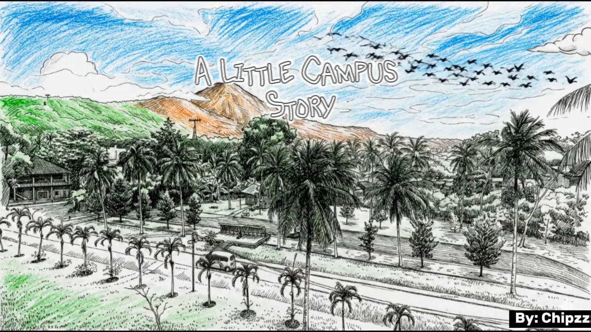
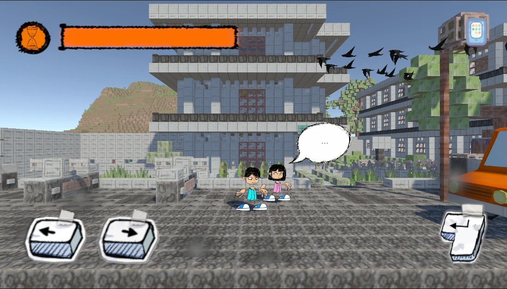

DEMO PERMAINAN ANDROID
Mengenal kampus.
Melalui cerita.
Jelajahi lingkungan Universitas Klabat melalui perjalanan Arthur. Demo Chapter 1 menghadirkan misi, percakapan, dan pengenalan fasilitas kampus.
Demo Android tersedia · Berkas APK di Google Drive
01 / TENTANG PERMAINAN
Lingkungan kampus.
Pengalaman interaktif.
A Little Campus Story merupakan permainan petualangan berbasis cerita untuk Android. Pemain mengikuti kegiatan Arthur, menyelesaikan misi, serta mengenal lokasi dan fungsi fasilitas di lingkungan Universitas Klabat.
Mode eksplorasi terbuka setelah Chapter 1 diselesaikan.

02 / CERITA ARTHUR
Chapter 1: Arthur
Chapter 1 mengikuti Arthur menghadapi tugas dan keraguan dalam kehidupan perkuliahan. Cerita pendamping tersedia melalui Wattpad.
03 / UNDUHAN
Unduh demo Android
Tombol unduh membuka folder Google Drive yang berisi berkas permainan.
Cara mengunduh
- 01Buka folder unduhan
Pilih tombol unduh untuk membuka Google Drive di tab baru.
- 02Pilih berkas APK
Unduh berkas permainan yang tersedia pada folder tersebut.
- 03Pasang di perangkat Android
Buka berkas yang telah diunduh, lalu ikuti petunjuk pemasangan pada perangkat.